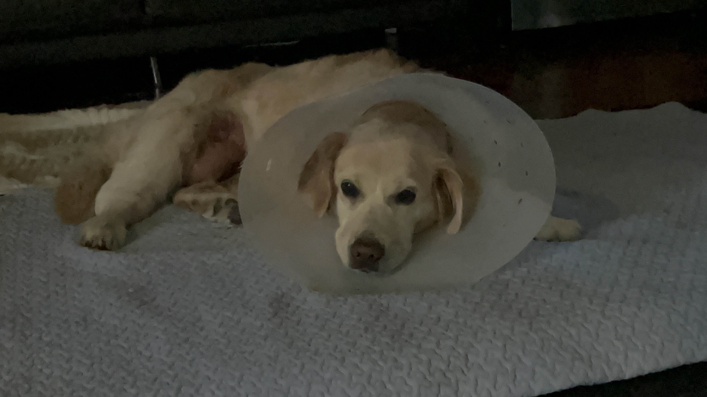
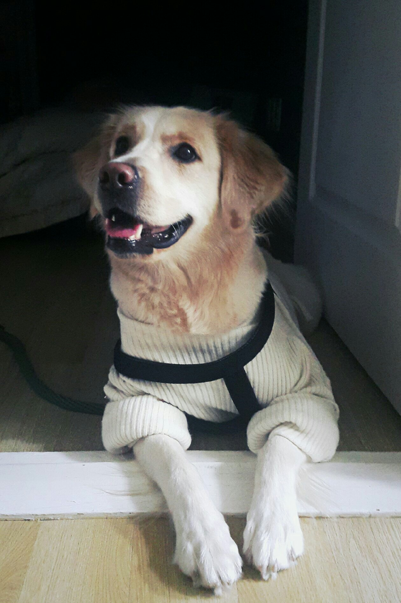
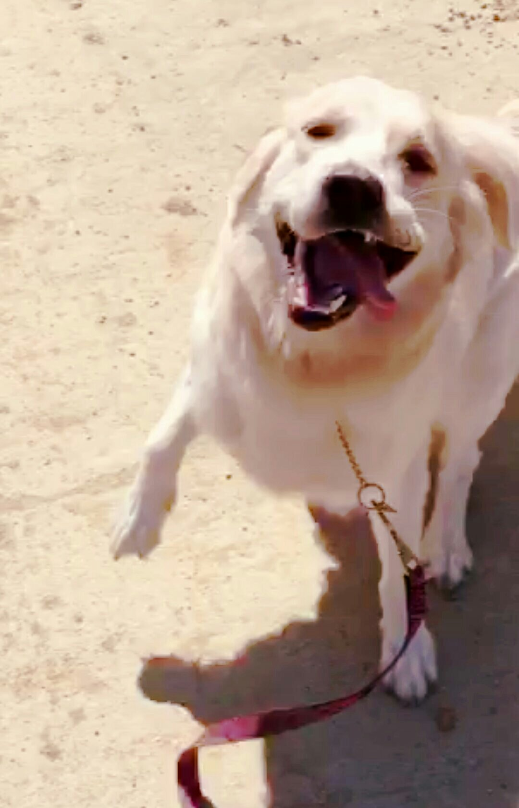

OUR FAMILY · OUR DANBI
단비에게
다시 걸을 수 있는 시간을
주세요.
13년 동안 우리 가족 곁을 지켜준 단비가 골육종과 싸우고 있습니다.
❤️ 단비 치료에 힘 보태기후원금은 단비의 치료와 회복을 위해 사용됩니다.
NOW
지금 단비는
STORY
단비에게 무슨 일이 있었나요?
단비는 2013년 7월 23일 태어나 오랜 시간 우리 가족과 함께 살아온 소중한 가족입니다.
얼마 전 아랫배 쪽에 생긴 종양을 제거하기 위해 수술을 진행했습니다.
하지만 종양은 제거해도 다시 자라나게될거라고, 또다시 더 크게 자라나는 상황이 반복될거라고합니다.
결국 수술을 계속 진행하기 어려워 수술을 중단하고, 현재는 진통제를 투약하며 앞으로의 치료 방법을 결정하기 위해 기다리고 있습니다.
단비에게 항암치료가 가능한지, 수술이 도움이 될 수 있는지, 그리고 필요한 경우 다리 절단 후 재활을 통해 다시 움직일 수 있는 방법이 있는지 알아보고 있습니다.
OUR DANBI
우리 가족의 단비



HOPE
앞으로 필요한 치료
정밀검사
혈액검사와 영상검사 등을 통해 단비의 현재 상태와 치료 가능성을 확인합니다.
항암치료 검토
수의사의 판단에 따라 항암치료 가능 여부와 치료 방법을 결정합니다.
수술 가능성 검토
단비의 상태에 따라 다리 절단수술을 포함한 수술적 치료 가능성을 검토합니다.
재활과 보조기구
수술을 받게 된다면 재활치료와 휠체어·보조기구 등이 필요할 수 있습니다.
HELP DANBI
단비에게 필요한 치료비
※ 위 금액은 병원에서 확정된 견적이 아닌 후원 목표 설정을 위한 예상 범위입니다. 실제 치료 방법과 비용은 담당 수의사의 진료 및 병원 견적에 따라 달라질 수 있습니다.
PLEASE HELP DANBI
단비에게
한 번만 더 기회를 주세요.
작은 마음 하나가 단비에게는 치료를 계속할 수 있는 힘이 됩니다.
💳 온라인 후원
아래 버튼을 통해 안전한 결제 페이지로 이동할 수 있도록 연결할 예정입니다.
현재 결제 서비스 준비 중입니다.
🏦 계좌 후원
계좌이체를 원하시는 분은 아래 후원 계좌를 이용해주세요.
계좌번호는 실제 공개 페이지 게시 전 직접 입력해주세요.
TRANSPARENCY
후원금은 투명하게 사용하겠습니다.
진료비 공개
가능한 범위에서 진료비 영수증과 치료 내역을 공유하겠습니다.
치료 과정 공유
단비의 치료 과정과 상태를 꾸준히 알려드리겠습니다.
남은 후원금
치료 종료 후 남은 금액이 발생할 경우 사용 내역을 안내하겠습니다.